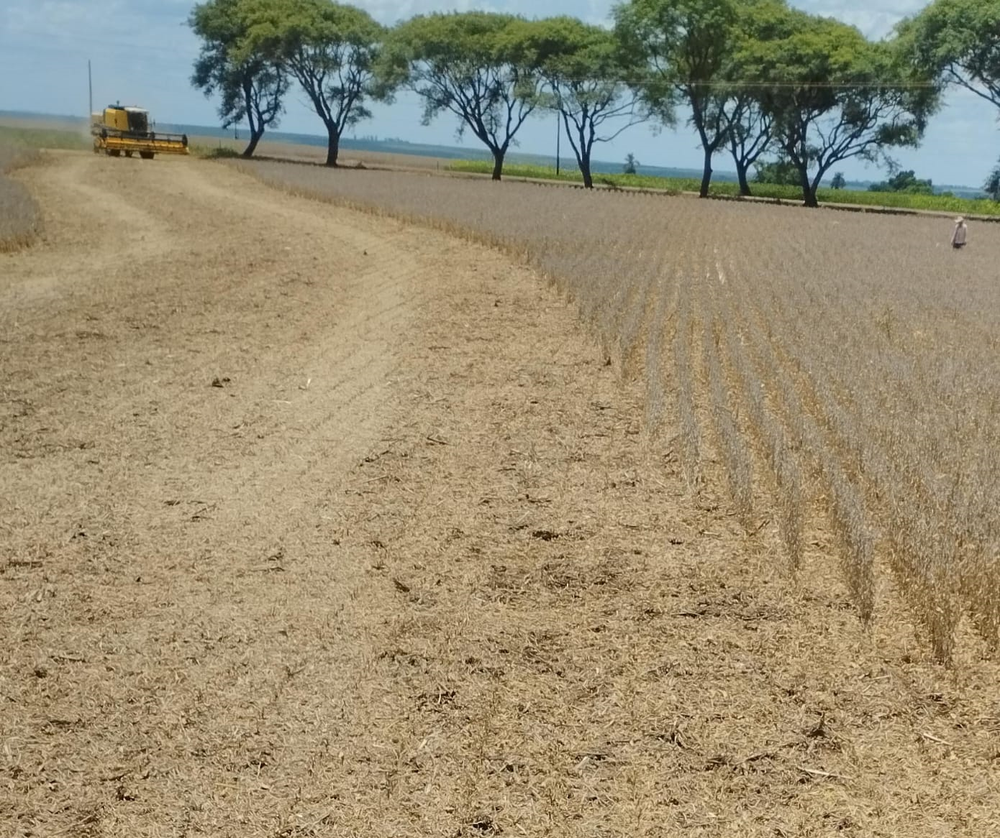

Como funciona o ciclo do soja:

Por Amanda Bomabana Pasa em 10/06/2024.
A soja Glycine max é nativa do leste da Ásia. O melhor momento para seu plantio depende da região e clima, mas geralmente é:
Quando a temperatura do solo atinge 15°C.
No final da primavera.
Quando o solo está suficientemente úmido, mas sem excesso de chuva.
Planeje o ciclo de 90 a 120 dias para evitar a colheita após a primeira geada do outono.
Plante durante a lua crescente, pois pode contribuir para uma colheita mais abundante e de melhor qualidade.
A colheita ocorre no final do verão e início do outono, cerca de 90 a 120 dias após o plantio, quando as folhas começam a amarelar e cair, com vagens secas e grãos duros.
É crucial colher antes da primeira geada. No hemisfério norte, isso é de setembro a novembro; no hemisfério sul, de fevereiro a maio.
Para um desenvolvimento saudável:
Escolha um solo bem drenado e faça rotação de culturas.
Use sementes certificadas e trate-as com fungicidas e inoculantes de rizóbio.
Utilize herbicidas seletivos e práticas de cultivo adequadas.
Mantenha o solo úmido, mas evite encharcamento.
Monitore e controle pragas e doenças de forma integrada.